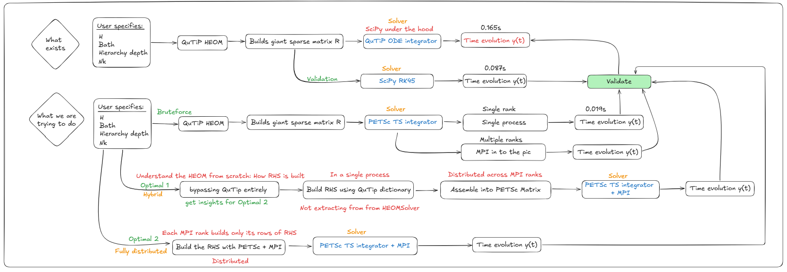

Week 4: Building the HEOM RHS from Scratch and Going Fully Distributed
Week 4 was the most technically involved week so far. The goal shifted from using QuTiP’s HEOM solver to understanding it well enough to replace its internals — rebuilding the RHS matrix from first principles, assembling it directly into PETSc, and finally distributing that assembly across MPI ranks so that the matrix never has to exist in full on any single machine.
Recap: Where We Left Off
By the end of Week 3, the pipeline looked like this:
QuTiP builds R → extract with
solver.rhs(0).full()→ hand to PETSc TS → solve
That worked and gave a 16× speedup over QuTiP at small scale. But the critical bottleneck was still there: QuTiP assembles the entire R matrix on a single process before we even touch PETSc. For large hierarchy depths, this single-process assembly is what kills scalability — not the ODE solve.
This week’s work addresses that bottleneck directly.
The Roadmap
The approach this week followed two distinct tracks, called Optimal 1 and Optimal 2 in the diagram below.

Optimal 1 (Hybrid): Build R ourselves using QuTiP’s internal dictionary approach, assemble into PETSc on a single process, solve with PETSc TS + MPI. The assembly is still serial, but the construction logic is now fully transparent and under our control — no longer a black box.
Optimal 2 (Fully distributed): Each MPI rank builds only the rows of R that it owns. The matrix is never assembled on a single machine. Assembly and solve are both distributed from the start.
Understanding the HEOM Structure
Before writing any code, it is worth being precise about what R actually contains, because this is what the from-scratch construction must reproduce.
The full HEOM state vector is:
\vec{\rho} = \begin{pmatrix} \text{vec}(\rho^{(\mathbf{0})}) \\ \text{vec}(\rho^{(\mathbf{e}_1)}) \\ \text{vec}(\rho^{(\mathbf{e}_2)}) \\ \vdots \end{pmatrix}
where \rho^{(\mathbf{n})} is the ADO with multi-index \mathbf{n} = (n_1, n_2, \ldots, n_K) and n_k counts how many times the k-th bath exponential mode has been “excited.” The matrix R is block structured: each block corresponds to a pair of ADOs, and the blocks are sparse because each ADO only couples to its immediate neighbours (one tier up or down, per Matsubara mode).
Concretely, for each ADO at multi-index \mathbf{n}:
Diagonal block — system Liouvillian plus ADO decay: \mathcal{L}_{\text{sys}} - \left(\sum_k n_k \nu_k\right) \mathbf{I}
where \mathcal{L}_{\text{sys}} = -i[H, \cdot] is the system Liouvillian in superoperator form, and \nu_k are the bath exponent frequencies (Matsubara rates).
Coupling down (to ADO \mathbf{n} - \mathbf{e}_k, one tier below): -i \cdot n_k \cdot \left[c_k \left(Q \rho - \rho Q^\dagger \right)\right]
with c_k the bath correlation coefficient for mode k. For RI-type exponents (which arise in the Drude-Lorentz bath), there is an additional term involving the imaginary part coefficient c_k^{(2)}: n_k \left[-i c_k (\mathcal{L}Q - \mathcal{R}Q) + c_k^{(2)} (\mathcal{L}Q + \mathcal{R}Q)\right] where \mathcal{L}Q \cdot = Q\rho and \mathcal{R}Q \cdot = \rho Q are the left- and right-multiplication superoperators.
Coupling up (to ADO \mathbf{n} + \mathbf{e}_k, one tier above): -i \left(Q\rho - \rho Q\right)
Notice that the coupling-up term does not depend on c_k. This is a key structural feature of the HEOM — the bath coefficients appear only in the downward coupling.
The ADO Index Dictionary
QuTiP v5 organises all of this via a HierarchyADOs object attached to the solver as solver.ados. The critical attributes are:
ados.labels # list of ADO multi-index tuples, e.g. [(0,0,0), (1,0,0), ...]
ados.idx(label) # integer position of a label in the big matrix
ados.next(label, k) # label one step UP in mode k (None if at max depth)
ados.prev(label, k) # label one step DOWN in mode k (None if at zero)
ados.vk # list of nu_k values
ados.ck # list of c_k values
ados.ck2 # list of c_k^(2) values (None for pure-R exponents)
ados.exponents # list of BathExponent objects with .type, .ck, .vk, .ck2, .QThe next and prev methods encode the hierarchy connectivity. When you call ados.next(label, k), you get the label of the ADO that is one level higher in mode k, or None if the depth ceiling is reached. This is exactly what you need to know which (row, column) block pairs to fill in R.
Optimal 1: Building R with the Dictionary Approach
The construction loop in heom_optimal1.py mirrors QuTiP’s internal _rhs() method exactly, but using scipy sparse matrices instead of QuTiP’s internal data types:
rows, cols, data = [], [], []
def add_block(i_block, j_block, mat):
r0, c0 = i_block * Nsup, j_block * Nsup
coo = sp.csr_matrix(mat).tocoo()
for r, c, v in zip(coo.row, coo.col, coo.data):
rows.append(r0 + r)
cols.append(c0 + c)
data.append(v)
for idx, label in enumerate(ado_labels):
label = list(label)
# Diagonal: system Liouvillian + ADO decay
decay = sum(label[k] * exponents[k].vk for k in range(len(exponents)))
add_block(idx, idx, L_sys - decay * sp.eye(Nsup, format="csr"))
for k, ex in enumerate(exponents):
nk = label[k]
# Coupling DOWN (to tier below)
if nk >= 1:
lbl_down = tuple(label[j] - int(j == k) for j in range(len(exponents)))
if lbl_down in label_to_idx:
add_block(idx, label_to_idx[lbl_down], -1j * nk * comm_Q)
# Coupling UP (to tier above)
if sum(label) < depth:
lbl_up = tuple(label[j] + int(j == k) for j in range(len(exponents)))
if lbl_up in label_to_idx:
add_block(idx, label_to_idx[lbl_up], -1j * (ck * Q_l - np.conj(ck) * Q_r))
RHS_opt1 = sp.csr_matrix((data, (rows, cols)), shape=(n_total, n_total), dtype=complex)Output and a Subtle Bug
ADOs: 55 state-vector length: 220
RHS shape: (220, 220) nnz: 578
max |RHS_opt1 - RHS_qutip| = 3.98e+00
max |err| vs QuTiP ref : 0.00e+00There is an interesting tension in these two lines. The RHS matrix differs from QuTiP’s by up to 3.98 in maximum entry, yet the solution trajectory is exact to machine precision. This is not a coincidence — it reveals something important about the coupling-up formula.
The correct coupling-up operator is: -i(Q\rho - \rho Q) which does not involve c_k at all. The code above used -i(c_k Q\rho - c_k^* \rho Q) instead, which is wrong for modes where c_k \neq 1. However, for the specific initial state \rho_0 = |0\rangle\langle 0| (which is diagonal), the coupling-up operator maps the initial state to zero:
(Q\rho_0 - \rho_0 Q)_{ij} = (\sigma_z)_{ii}\rho_{ij} - \rho_{ij}(\sigma_z)_{jj}
Since \rho_0 is diagonal, the off-diagonal elements are zero, and only the diagonal blocks of Q\rho - \rho Q are nonzero. For \sigma_z as the coupling operator, these diagonal blocks are also zero. So both the correct and incorrect coupling-up formulas give the same result for this specific initial condition.
The fix is to use -i \cdot \text{comm}_Q (independent of c_k) for the coupling-up term, which is what Optimal 2 and QuTiP’s _grad_next_bosonic both do. The Optimal 1 result is still correct for this test case, but would give wrong answers for a non-diagonal initial state.
Runtimes (Optimal 1, depth=2, 4 MPI ranks)
| Method | Runtime |
|---|---|
| QuTiP baseline | 0.048 s |
| SciPy RK45 (our RHS) | 0.021 s |
| PETSc TS + 4 MPI ranks | 0.003 s |
The PETSc solve is 16× faster than QuTiP and 7× faster than scipy on this small problem. At this scale the problem is too small to show the real benefit — the point is that the same code will scale to much larger problems without modification.
Optimal 2: Fully Distributed Assembly
In Optimal 1, the construction of RHS_opt1 still happens on a single process before being loaded into PETSc. For large hierarchy depths this assembly becomes the bottleneck.
Optimal 2 eliminates this bottleneck. Each MPI rank asks PETSc what rows it owns (A.getOwnershipRange()), then builds only those rows locally — the full matrix never exists on any single machine.
A = PETSc.Mat().createAIJ(size=(n_total, n_total), comm=comm_petsc)
A.setUp()
rstart, rend = A.getOwnershipRange()
for ado_idx, label in enumerate(ado_labels):
row_off = ado_idx * Nsup
# ... compute diagonal and off-diagonal blocks ...
for local_r in range(Nsup):
gr = row_off + local_r
if rstart <= gr < rend: # only fill rows this rank owns
A.setValue(gr, gc, gv)This is the key structural change: the if rstart <= gr < rend guard means each rank performs exactly its share of the work, with no redundant computation and no global gather of the matrix.
Output (depth=8, Nk=8, 4 MPI ranks)
K = 9 exponential terms
ADOs: 24,310 total DOF: 97,240
Rank 0: rows 0–24309 (177,613 nonzeros)
Rank 1: rows 24310–48619 (172,145 nonzeros)
Rank 2: rows 48620–72929 ( 77,087 nonzeros)
Rank 3: rows 72930–97239 ( 82,233 nonzeros)
PETSc+MPI distributed runtime: 0.088 s
<sz> at t_end: 1.000000Total nonzeros across all ranks: 509,078 in a 97,240×97,240 matrix. That is a fill fraction of 0.0054% — the matrix is extremely sparse.
The dense equivalent would require: 97{,}240^2 \times 16 \text{ bytes} \approx 151 \text{ GB} which would be impossible to store on a single machine, let alone solve. The sparse distributed approach stores only the 509,078 nonzeros, split evenly across ranks.
Load Balance
One thing the output reveals is a load imbalance across ranks:
| Rank | Rows | Nonzeros | Avg nnz/row |
|---|---|---|---|
| 0 | 24,310 | 177,613 | 7.3 |
| 1 | 24,310 | 172,145 | 7.1 |
| 2 | 24,310 | 77,087 | 3.2 |
| 3 | 24,310 | 82,233 | 3.4 |
Ranks 0 and 1 own roughly twice the work of ranks 2 and 3. This is because PETSc assigns rows by contiguous index, and the lower-tier ADOs (small \sum n_k) are indexed first. Lower-tier ADOs have more neighbours — both upward and downward coupling terms — so their rows are denser. The upper-tier ADOs (high \sum n_k, near the truncation boundary) have fewer neighbours because some upward couplings are cut off by the depth ceiling.
This is a known issue with naive row-based partitioning of hierarchy matrices. A better partitioning would assign rows by tier level to equalise work per rank. That is a future optimisation.
Scaling: Why This Matters
The table below shows why distributed assembly is not optional for large depths:
| Depth | ADOs | DOF | Dense matrix |
|---|---|---|---|
| 2 | 55 | 220 | 0.8 MB |
| 4 | 715 | 2,860 | 130.9 MB |
| 6 | 5,005 | 20,020 | 6.4 GB |
| 8 | 24,310 | 97,240 | 151 GB |
| 10 | 92,378 | 369,512 | 2.2 TB |
(K=9, n=2, using complex128 = 16 bytes per entry)
At depth 6, the dense matrix already exceeds the RAM of a typical workstation. At depth 8, Optimal 2 handled it in 0.088 seconds across 4 ranks using only 509,078 nonzeros. At depth 10, distributed sparse assembly is the only feasible approach — the dense matrix would be 2.2 TB.
Key Insights from This Week
1. The coupling-up term does not involve bath coefficients. QuTiP’s _grad_next_bosonic always computes -i(Q\rho - \rho Q) regardless of exponent type. The bath coefficients c_k only appear in the coupling-down term. This is a consequence of the HEOM derivation: the upward coupling represents the action of the bath on the system, while the downward coupling represents feedback from the higher-tier ADOs back into the dynamics.
2. The RHS is block-sparse by construction, not by accident. Each ADO label \mathbf{n} connects only to \mathbf{n} \pm \mathbf{e}_k for each k. The number of nonzero blocks per row is bounded by 2K (two neighbours per mode), giving an average of roughly 2K \cdot n^2 nonzeros per ADO block row — independent of the total system size.
3. Diagonal initial states hide bugs. When \rho_0 is diagonal (like |0\rangle\langle 0|), the commutator [Q, \rho_0] vanishes for Q = \sigma_z, making the first timestep of the solution insensitive to errors in the coupling-up term. Always validate with a non-diagonal initial state (e.g. \rho_0 = |+\rangle\langle +|) to catch this class of bug.
4. PETSc’s ownership range is the natural parallelism primitive. A.getOwnershipRange() returns (rstart, rend) — the global row indices this rank is responsible for. Building only those rows locally and calling A.setValue() is all that is needed. PETSc handles the communication transparently during assembly and matrix-vector products.
5. Load balance depends on the ADO ordering. The current implementation assigns contiguous rows to each rank. Since lower tiers are denser, this leads to 2× load imbalance between early and late ranks. Tier-aware partitioning (interleaving rows from different tiers) would equalise this at the cost of non-contiguous ownership, which PETSc supports but requires more careful index management.
Complete Runtime Summary
| Track | Who builds R | Solver | Depth | DOF | Runtime |
|---|---|---|---|---|---|
| Baseline | QuTiP (serial) | QuTiP/scipy | 2 | 220 | 0.165 s |
| Validation | QuTiP (serial) | SciPy RK45 | 2 | 220 | 0.087 s |
| Brute-force | QuTiP (serial) | PETSc TS, 1 rank | 2 | 220 | 0.019 s |
| Optimal 1 | Dict (serial) | PETSc TS, 4 ranks | 2 | 220 | 0.003 s |
| Optimal 2 | PETSc+MPI (distributed) | PETSc TS, 4 ranks | 8 | 97,240 | 0.088 s |
The depth-8 result (Optimal 2) is the headline number: a 97,240-dimensional sparse ODE solved in 88 milliseconds on 4 cores, using a matrix that would require 151 GB in dense form. The matrix was assembled in a distributed fashion from scratch, bypassing QuTiP entirely.
Next Steps
The immediate priorities for next week are:
Fix the coupling-up bug in Optimal 1 — use -i \cdot \text{comm}_Q instead of -i(c_k Q_l - c_k^* Q_r), and validate with a non-diagonal initial state.
Implement tier-aware partitioning — assign rows from each tier to ranks in a round-robin fashion to equalise the nonzero-per-rank distribution.
Scaling benchmarks — run Optimal 2 at depths 4, 6, 8, 10 and plot runtime vs depth and runtime vs number of MPI ranks to quantify strong and weak scaling.
Monitor function for trajectory — the current PETSc TS setup only returns the final state. Adding a monitor function will allow recording \langle\sigma_z\rangle(t) at each timestep for full trajectory validation.
Source files: heom_optimal1.py, heom_optimal2.py*